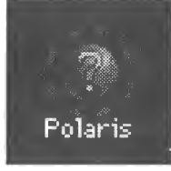
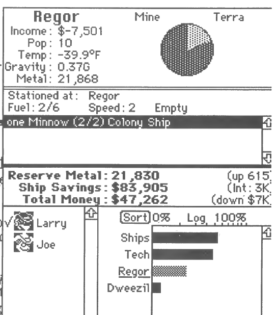
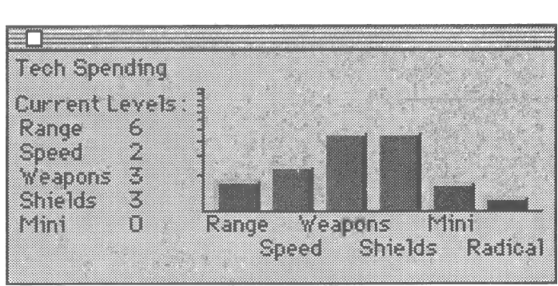

More Detailed Information
Installing Spaceward Ho!
It’s best to put Spaceward Ho! on your hard drive. If you have a color Macintosh, you’ll also want to put the Color Pictures file in the same folder as the Spaceward Ho! application, so you see the little planet pictures side by side. If your Mac is black and white, you can save hard disk space by not installing the color pictures. When you first run the game, Spaceward Ho! will ask you to personalize the game by entering your name.
Starting a New Game
When Spaceward Ho! starts, it’ll put up a dialog that lets you start a new game or resume a saved one. Select “New Game.” You’ll then have to name your galaxy. Next, a big scary “Create Galaxy” dialog will come up. Just hit “Create.” Spaceward Ho! will then ask for your name. Once you enter it, you’re ready to play.
The best way to learn Spaceward Ho! is to play the game your first time while reading the manual. We’ve tried to organize this book so that it answers your questions as they come up. We’re not going to give you a bunch of “read the whole manual thoroughly before beginning to play” garbage. Sit down and take a pop at the game. Just remember you’ll have questions, and this manual answers them.
You can also turn on “Auto Play...” in the “Options” menu and see how the computer would play. You’ll get an idea of how things go, and you can turn off Auto Play at any time and take over yourself.
The Windows
Spaceward Ho! has three windows. You can drag the windows around and resize them how you like, so you can configure the game for your monitors and style of play. Spaceward Ho! automatically saves your window layout when you quit and restores it the next time you play, so you don’t have to keep fooling with it.
The Main Window
The Main Window is the only really important window in Spaceward Ho!. It contains the Star Map and the budget, planet, and fleet information. The window’s title bar will say something like, “Peter in Milky Way in 2000,” which means you’re currently registered as Peter in the game “Milky Way” in the year 2000. Duh.
The Star Map
The right part of the main window of Spaceward Ho! is the Star Map. It lets you see where you are, where you’ve been, where you can go. You use the Star Map to move ships (click and drag from one star to another) and to choose the planet to look at and deal with.
There are several types of stars you’ll see in the Star Map. For now, we’ll just explain the kinds you can see at the very beginning of a game.
Your Home Planet
This is where you live. It’s a heavily populated, highly profitable, technologically advanced planet ready to go out and explore the universe. You’ll build your first ships here.
An Unexplored Planet
At the start of the game, everything but your home planet is unexplored. Once you go to a planet, you’ll find out more about it, and its picture will change to reflect your new discoveries. The rest of the types of planets will be covered later, in the “Planets” chapter.
A Selected Planet

When you select a planet, it highlights by getting a corona around it. All the information to the left of the star map will now refer to that planet—its temperature, gravity, income, and so on.
Messages & The Report Window
The Report Window is a scrolling history of the important things that have happened over the last several turns. Each message will appear in the lower left hand corner of the Star Map at the beginning of each turn. When you click on the message, it will go on to the next one. When you’ve read all the messages, an “End Turn” button will appear in the top left corner of the map.
There are many different kinds of messages. When you explore a star, you’ll get a message about the star’s temperature and gravity. When you colonize a planet, you’ll get a friendly notice. When you’re in a battle, you’ll get a message summarizing the result.
You can click on an old message in the Report Window to get further information. For example, when you click on a battle summary, Spaceward Ho! will replay the battle. When you click on a message mentioning a planet, you’ll scroll the map to that planet and select it.
Budget Information
Information on the currently selected planet.
Info on the selected fleet. (Select a fleet by clicking on it in the list below.)
Global information for all of your planets. All of your money and metal goes to and comes from these numbers.
List of players in the game. The check marks show whether they've finished their turn yet.

Pie chart for dividing spending for the current planet.
List of fleets at current planet.
Change since last turn.
Bar chart for dividing up your spending among the planets.
The numbers in the budget information are there solely for informative purposes. You can’t change them directly. (Though it would be handy to say, “I think I’ll just give myself some more money!”) What you can change is the bar chart below them.
The Bar Charts
The most important controls you have in Spaceward Ho! are your bar charts. They are what you use to spend your money and carry out your strategy. Unlike boring bar charts you see on overheads during business presentations, you can change the bar charts in Spaceward Ho!
For example, the Budget bar chart is what you use to divvy up your money between each of your colonies. You also can use some of it for technology research, and save some for shipbuilding. The bigger you make the bar to the right of a planet name, the bigger the portion of your total budget that will go to that planet. Click and drag the mouse in the bar chart to lengthen or shorten the bar to where you clicked, adding to or subtracting from other bars proportionally.
So, to spend the same amount of money on Tech and your planet, just click and drag directly on the Tech bar. As you move the mouse around, you’ll notice the Tech bar go up as the others go down, and down as the others go up. Set it so that your Tech bar and your colony bar are the same length. You could do the same thing by dragging on the planet’s bar. Take your pick.
The Budget bars can be broken down into smaller bar charts. For example, click on the word “Tech” in the Budget Window. The Tech Window will pop up. This is a detailed, specific view of your Tech spending. That is, it divides the money that you spend on Tech in the Budget Window. We’ll tell you more about the Tech Window later.
Ship Savings is money that will be saved up for later use and shipbuilding. In general, it’s a good idea to have money saved for a rainy day. You get interest on your savings, just like at your local bank.
Planet Information
Information on the currently selected planet (the one with the “corona” around it) is in the upper left hand corner of the Main Window. If you select a growing colony, you’ll see a pie chart that shows how money you spend on that planet is divided between mining and terraforming. Again, don’t get too concerned about exactly what percent you’re spending on each item; just try to get the proportions right.
Spend money on Terraforming to modify a planet’s temperature to 72°. (That’s your favorite temperature.) If a planet is already 72°, you can’t spend money on terraforming.
Spend money on Mining to free the planet’s resources, making the metal available for shipbuilding. Again, when the planet runs out of metal, you can’t spend any more money mining it.
The “Income” of a planet is how much extra money a planet puts into your total budget. If it’s a planet you’ve just colonized, this will be negative, meaning that you have to pump money into it just to keep it alive. The more a planet is like your home planet (which is 72° and 1.00 G), the more money-making potential it has. Planets too unlike your home planet will never make a profit.
The Tech Spending Window

Use the Tech Spending Window to show what technologies you want to develop the most. You may choose to research different technologies, depending on your strategy, philosophy, and the current game situation. For the most part, you don’t need to fool with this window much.
Remember that the Tech Spending Window just divides up the Tech money, and doesn’t decide how much Tech money there is—you set that with the Budget Window bar charts.
Note that the hash marks on the left of the Tech Spending bar chart are not evenly spaced. Each hash mark denotes 10%, but they’re displayed logarithmically to allow you to get more precision when dividing up your tech spending.